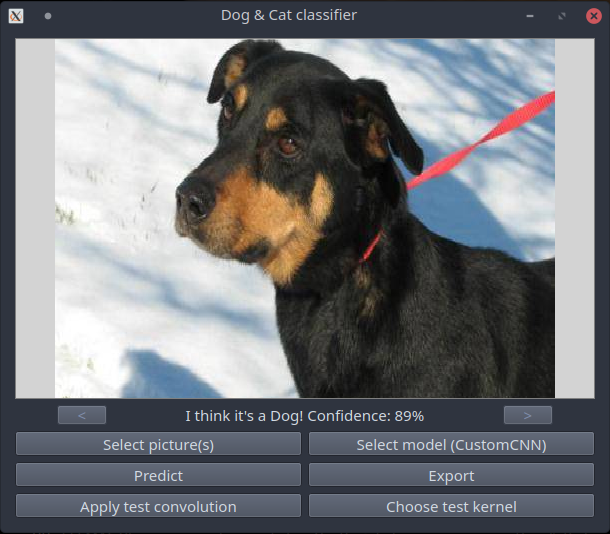

Chien ou chat ?
Vous trouverez ci-dessous les instructions et détails sur le programme “Chien ou chat?”. Le but de se programme est de réussir à déterminer si une image contient un chien ou un chat.
Ce programme utilise le deep learning et notamment les réseaux de neurones convolutionels (CNN), grace à la librairie tensorflow/keras.
Installation
Ce projet utilise la librairie tensorflow et peut nécéssiter un GPU (une carte graphique dédiée) pour fonctionner correctement.
Pour installer l’application, commencez par copier le dépot du livre (AI-book sur github), soit en recupérant l’archive zip depuis github, soit à l’aide de l’outil git:
git clone https://github.com/iridia-ulb/AI-book
Puis, accedez au dossier:
cd Cat_or_Dog
Après avoir installé python et poetry, rendez vous dans ce dossier et installez les dépendances du projet:
poetry install
Utilisation
Vous pouvez ensuite lancer le jeu, dans l’environnement virtuel nouvellement créé, en utilisant la commande:
poetry run python main.py

Pour télécharger des images afin de tester ou de réentrainer le réseau vous pouvez trouver un set de données en ligne sur la plateforme kaggle contenant 10000 photos de chiens et de chat en cliquant ici.
Une fois lancé, vous pouvez charger un réseau de neurone pré-entrainé en cliquant sur “Select model”. Une fois le modèle selectionné vous pouvez charger une image (jpg uniquement) en cliquant sur “Select picture(s)”, puis “Predict” pour voir la prédiction du réseau de neurone s’afficher.
Il est aussi possible de tester certains filtres sur une image cliquant sur “Choose test kernel”, puis en choisissant un filtre à appliquer à l’image, puis finalement cliquer sur “Apply test convolution”.
Entrainement
Pour en entrainer un nouveau réseau de neurone, vous pouvez utiliser le programme train.py, utilisable comme ceci:
poetry run python train.py -f customCNN
Dans cette exemple, à la fin de l’entrainement, le modèle sera enregistré dans le dossier model_customCNN.
Chaque modèle enregistré dans le dossier principal du projet sera ensuite selectionable dans l’interface de main.py
En résumé:
usage: train.py [-h] [-f FOLDER]
CNN Trainer for the Cat or Dog app.
optional arguments:
-h, --help show this help message and exit
-f FOLDER, --folder FOLDER
Destination folder to save the model after training ends.